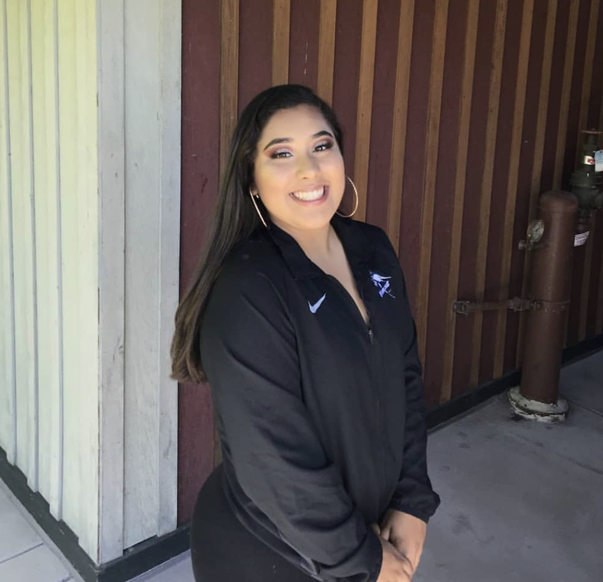
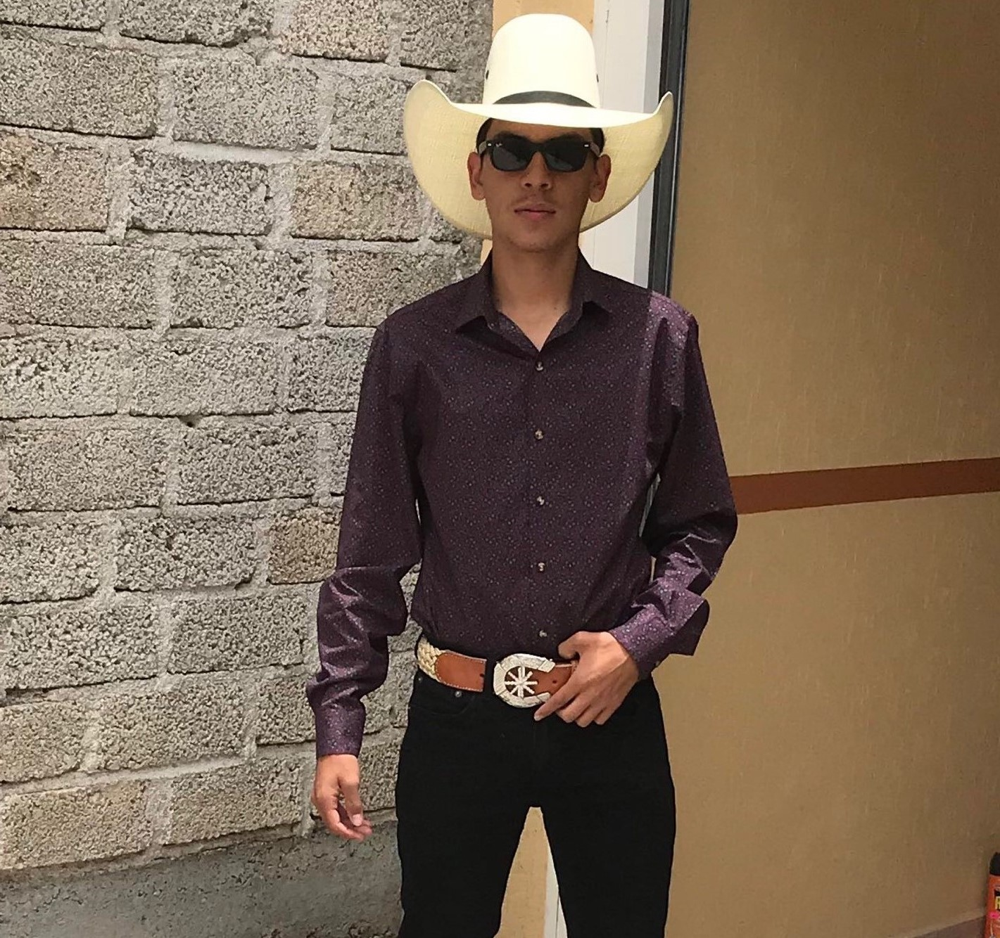

Hello my name is Miles Shaw. I attend Amador Valley High School in Pleasanton California. I enjoy spending time with my family and my dogs. I love going on runs with my brother and my dogs. One of my passions is playing lacrosse. I am very active on my social media's. My dream job would to either be an enviromental engineer or a marine biologist and to have fun traveling all over the world. Please contact me through Instagram: @milesperhour25 or through my email: miles.shaw@scholar.smash.org
My name is Claudia Ayala, I am a 16 years old, I go to Making Waves Academy in Richmond, CA and I am a proud Latina. I love hiking, sports, dancing, painting, and reading (when the book is interesting). My roots are from Durango, Durango, Mexico, but I was raised in the Bay Area. My dream career is being an orthopedic surgeon and recycling my success back into my community. Contact me at: claudia.ayala@scholar.smash.org
Hello my name is Alfredo Alcala, I am a Mexican American teenager from East Oakland. I am currently 16 years old. I go to Lionel Wilson College Prep Academy in East Oakland. My family is from Zacatecas and Michoacan, but I was born in Hayward. In my free time I like to play and listen to music, I also like playing sports, hanging out with friends, and riding my horse. I aspire to go to Cal Poly SLO and gain a degree in either Mathematics or Construction Management. In the future, I hope to manage my own construction business or work as an accountant. Contact me at: alfredo.alcala@scholar.smash.org

Hello, my name is Alanna Le. I go to Mt. Diablo High School in Concord, CA and currently I am a rising Junior. I like listening to music, running, playing sports, watching anime and memes, and most of all helping people. I am well-round because like doing many things; in hope that I find something that I could stick to. I don’t know what college I want to go to nor what major or career I want to pursue. I hope I can to be someone who can impact my love one lives by guiding and support them the best of my ability. Conatct my email:alanna.le@scholar.smash.org